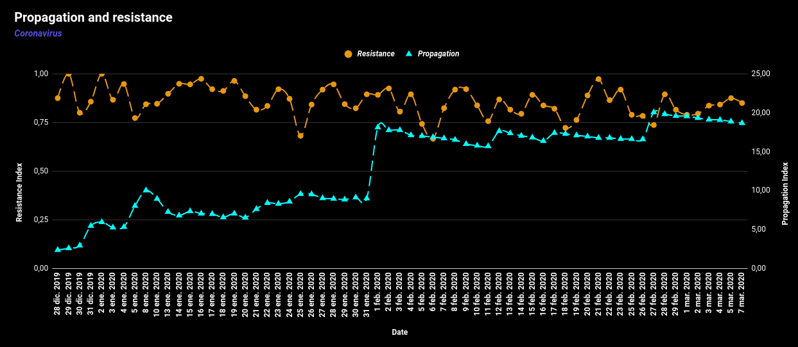
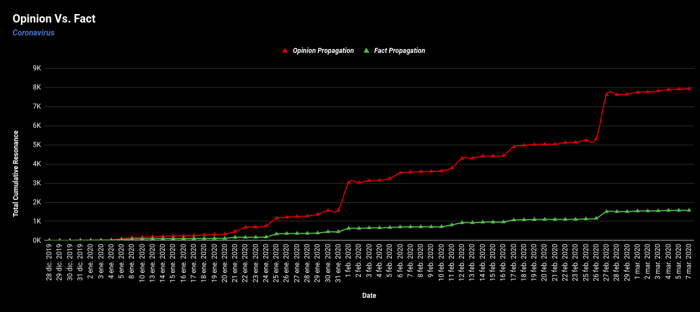

|
Outbreak of Novel Coronavirus (2019-nCoV) |
| |
Outbreak of Novel Coronavirus (2019-nCoV) |
The year 2020 began with a lot of bad news, among them is the high political tension between the US and Iran, monstrous fires that threaten a cosniderable part of Australia and its fauna, and the topic of which I am going to talk to you today: The spread of the Novel coronavirus 2019-nCoV. To make a brief introduction to what this new virus means, I cite some official sources that can better explain the situation.
2019 Novel Coronavirus (2019-nCoV) is a virus (more specifically, a coronavirus) identified as the cause of an outbreak of respiratory illness first detected in Wuhan, China on 31 December 2019 . Early on, many of the patients in the outbreak in Wuhan, China reportedly had some link to a large seafood and animal market, suggesting animal-to-person spread. However, a growing number of patients reportedly have not had exposure to animal markets, indicating person-to-person spread is occurring. At this time, it’s unclear how easily or sustainably this virus is spreading between people[..]
-Taken from Centres for Disease Control and Prevention
Coronaviruses (CoV) are a large family of viruses that cause illness ranging from the common cold to more severe diseases such as Middle East Respiratory Syndrome (MERS-CoV) and Severe Acute Respiratory Syndrome (SARS-CoV). A novel coronavirus (nCoV) is a new strain that has not been previously identified in humans.
Coronaviruses are zoonotic, meaning they are transmitted between animals and people. Detailed investigations found that SARS-CoV was transmitted from civet cats to humans and MERS-CoV from dromedary camels to humans. Several known coronaviruses are circulating in animals that have not yet infected humans.
Common signs of infection include respiratory symptoms, fever, cough, shortness of breath and breathing difficulties. In more severe cases, infection can cause pneumonia, severe acute respiratory syndrome, kidney failure and even death.
Standard recommendations to prevent infection spread include regular hand washing, covering mouth and nose when coughing and sneezing, thoroughly cooking meat and eggs. Avoid close contact with anyone showing symptoms of respiratory illness such as coughing and sneezing.
-Taken from World Health Organization
 |
About this study |
Twitter is a social network known to almost everyone since, in addition to being a social network with hundreds of millions of users worldwide, it is a of mass dissemination tool for topics as current affairs, news, politics, science, and culture among others.
Twitter is a social networking and microblogging service that allows users to post real time messages, called tweets. Tweets are short messages, restricted to 140 characters in length. Due to the nature of this microblogging service (quick and short messages), people use acronyms, make spelling mistakes, use emoticons and other characters that express special meanings.[..]
-Taken from Sentiment Analysis of Twitter Data. Agarwal A. ,Xie B., et al.(2011)
It is important to mention that, for a premature humanity that is learning the power of the Internet, the concept of Twitter is experimental: Express an idea with limited characters and make it available to all the people of the world, literally, if desired. As a social experiment of mass distribution of opinions, Twitter takes the lead in exposing the true face of the Internet and its use as a collective intelligence.
[..] Individually, most Twitter messages are stupefyingly trivial. But the true value of Twitter — and the similarly mundane Dodgeball, a tool for reporting your real-time location to friends — is cumulative. The power is in the surprising effects that come from receiving thousands of pings from your posse. And this, as it turns out, suggests where the Web is heading.
-Taken from Wired
wikipedia defines sentiment Analysis as :
[..] Sentiment analysis (also known as opinion mining or emotion AI) refers to the use of natural language processing, text analysis, computational linguistics, and biometrics to systematically identify, extract, quantify, and study affective states and subjective information.
-Taken from Wikipedia
Natural language processing is, in other terms, an area of study in the development of Artificial Intelligence that tells us about the way in which computers can interpret human language, creating rules between words and characters in order to assign them some syntactic value. In quantifying these properties, it is easy to notice patterns of association between nearby words, very frequent words or the position in which a word is found within a sentence. These patterns are of great value to go one step further in the interpretation of language: meaning. If a machine is taught to relate these patterns to any quantity that quantifies some dimension of human feeling, it will be easy to make semasiological associations since in many cases they are evident. For example, in terms like or dislike for reviews made to products, relationships such as the given score and the appearance of the words "bad" and "excellent" are usually found.
One day at work, I started to hear the conversation of two colleagues talking about this new disease caused by coronavirus and I thought: everyone is talking about how the coronavirus is rapidly expanding around the world, but very few actually wonder how it is that They got to talk about the coronavirus in the first place. It would be an interesting proposal to see the coronavirus, a threat of global stature, as a social phenomenon exposed to the globalization of the opinion generated by the internet.
For this study, the source of information will be Twitter, as a way to reflect the world's opinion on a subject of great impact such as the Coronavirus. The idea is to draw relevant conclusions about how the world sees this new threat using Sentiment Analysis on Tweets and comparing associated quantities such as the number of likes, retweets and responses. Twitter data is public and extracted using Web Scrappers in Python, they are filtered according to their quality and relevance and then processed by sentiment analysis libraries to quantify properties such as subjectivity and polarity (Positive or negative inclination of Tweet) .
Under no circumstances are attempts to plagiarize the work of the sources cited or provide false information. The filter stage of the Tweets is still in development and the poor quality of the information may alter the result slightly, to which the study will be constantly updated to provide more accurate and updated information. Any suggestions on how to improve the study are welcome in my e-mail: davidpaipa03@gmail.com
For some reason I can not extract more than one cap of tweets per day, it is probably a restriction that Twitter has to restrict the use of bots on its platform. In any case, I will try to expose the properties of interest in the best possible way, understanding that a limited population is available.
 |
Observing Twitter Data |
Making a preliminary exploration of the data, the appearance of the subject is observed as a global trend from the first day of the year 2020. But beyond the frequency with which the tweets appear, the analysis of sentiment throws relevant data on the nature of the tweets.
An analysis of the tweets is executed: initeligible words, grammatical connectors and other filler words are discarded leaving the really important words as a source of information. The effective range is limited to words associated with English, as well as the character dictionary is limited to those alphanumeric in Latin alphabet. Below is a graphic representation of the most frequent words found in the Tweets sample, taking into account that a higher frequency implies greater relevance in the word cloud:
The illustration speaks for itself.
From the hashtgas used by people, those used in the least relevant tweets are discarded, likewise, only those that make any sense within the context of the coronavirus are preserved. It is expected that the most used hashtag is #coronavirus, but then the other hastags found within the sample are exposed:
It is importnat to mention (as you may have suspected) that these are not all of the hashtags retrieved, but are the most relevant (or most frequent) since many of them appeared one time or where written with terrible ortography. The other ignored hashtags correspond to a 12.5% of the total sample, #coronavirus correspond to a 37.2% and the other 50.3% corresponds to the ones here displayed.
The polarity analysis is a score that shows the positive and negative effects of keywords within a sentence. The keyword analysis is pre-trained with movie reviews obtained from opinion forums to establish a relationship between common words in the expression of an opinion and the feeling generated. This allows you to classify the Tweets given the words they contain in order to determine a feeling or polarity for each one. Depending on this polarity value, the tweet is classified as "Good" or "Bad" if it has a strong feeling inclined to either of these two polarities. If the feeling is not relevant, it is classified as "not interesting." Below is how the tweets behaved for a population of approximately 600 users per day who talked about the topic.
The Resonance analysis is obtained by quantifying the people reached by each tweet. Measuring this effective population reached, Amplifying the polarity according to the Tweet's objectivity lead to a value called Impact, which talks about the positive or negative impact of the topic in social media.
A tweet may reach few people, but with an objective approach and a great polarity value it may create a considerable impact. By the other hand, a tweet may reach many people, but if its a subjective Tweet with few sentiment it might not create a great social echo.
take into account that from the action of 600 users a day a reach of almost 120 thousand individuals was achieved. "Coronavirus" is a concept that spreads from public opinion, knowing that this study was conducted without taking into account publications made by official news sources or any scientific source of information.
We are going to quantify the average number of people reached by tweet for each day. This amount is calculated by taking out the resonance rate achieved by tweets made on the same day, thus obtaining a number greater than or equal to one corresponding to the number of possible replicas achieved on average for each tweet made on the subject; This number is the propagation index.
Another number of interest is to quantify how many tweets are left behind given their low subjectivity and neutral polarity. Any Tweet of low impact is considered discarded by the social trend movement and its rate with respect to the amount of daily tweets is called the resistance index. This number between zero and one expresses the proportion of tweets that have to be lost from one day to another given their low interest rate. The following shows how these indices behave over time and a trend line associated with their behavior.
The sentiment analysis model recognizes keywords to determine the degree of subjectivity of a statement. This applied to the tweets quantifies how close they are to be a fact or an opinion according to the vocabulary used in their writing. To determine the propagation of opinions and facts, the proportion of subjective tweets, resistance and resonance by date is taken into account. With this, there is a value corresponding to the volume of tweets with transcendence (echo) classified as fact or opinion.
By increasing the daily rate of objective tweets using the propagation index and accumulating this value by dates given the persistence in the network of tweets, a new amount arises corresponding to the propagation of objectivity and subjectivity. These amounts correspond to the potential per day of each tweet to generate responses in each of these categories according to objectivity; it is measured in the same units as resonance, as it is also a metric for spreding. Focusing specifically on opinions, one can quantify how many opinions are propagated by each equally propagated fact: this rate is the subjectivity persistence.